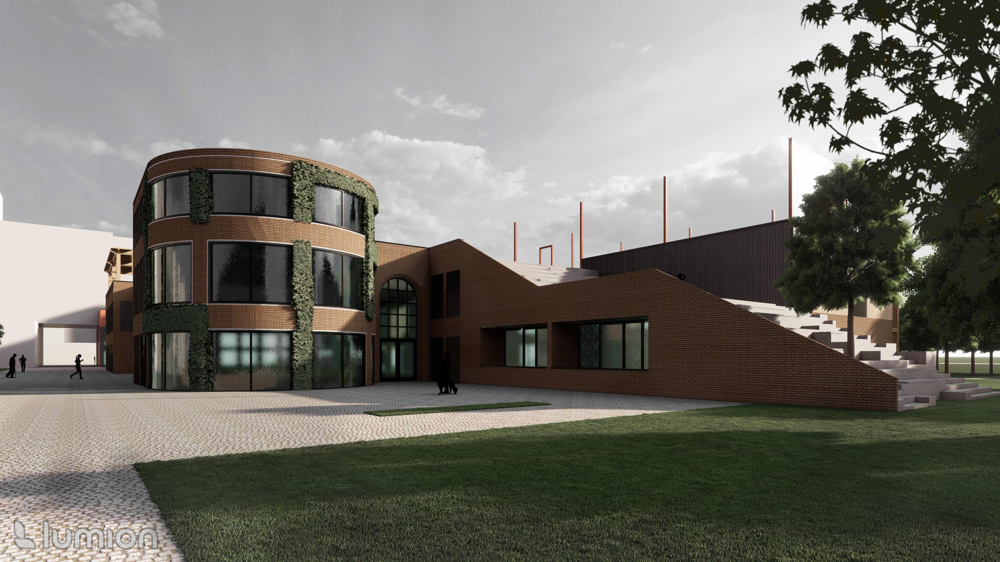
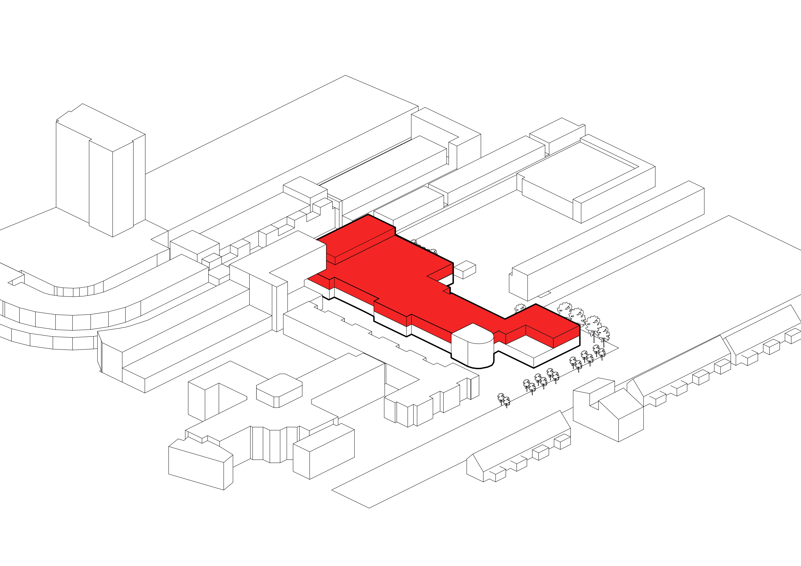

This former school building has undergone a transformation into a contemporary and unique apartment complex. The roof of the building is publicly accessible and has a versatile location for various cultural activities. With four separate zones available for cultural pursuits, the roof provides an inspiring and flexible space for sport activities, urban farming, music, and food. This not only fosters community among residents but also paves the way for cultural enrichment in the surrounding neighborhood.

On a beautiful summer day, you walk through the park and notice a staircase leading to a rooftop terrace. Out of curiosity, you decide to climb the stairs. Once at the top, you see a lane that seems to serve as a central gathering place. Upon reaching this spot, you look around and see various activities taking place around you. You see a group of people enjoying the music. Further along, a group of young people are playing basketball on the sports field, and in a small vegetable garden, an elderly man is busy picking tomatoes.

What you’ve just observed is a rooftop garden for the residents. A unique place where different users can practice their hobbies in a central neighborhood location, where interaction between the various users is encouraged.
Location: Zwolle, Overijsel
Function: Residential - Gathering
Area: 5250m²

On a beautiful summer day, you walk through the park and notice a staircase leading to a rooftop terrace. Out of curiosity, you decide to climb the stairs. Once at the top, you see a lane that seems to serve as a central gathering place. Upon reaching this spot, you look around and see various activities taking place around you. You see a group of people enjoying the music. Further along, a group of young people are playing basketball on the sports field, and in a small vegetable garden, an elderly man is busy picking tomatoes.